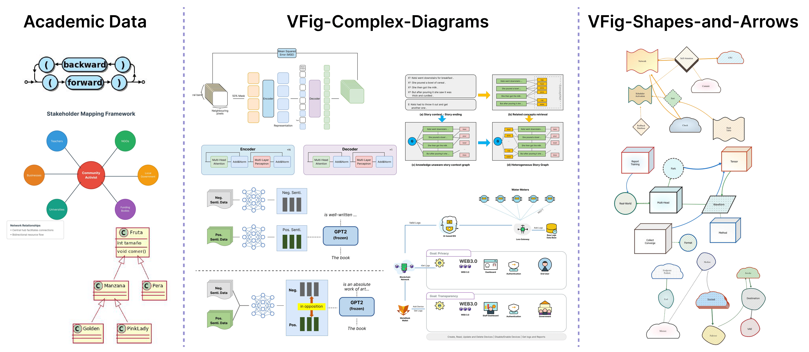
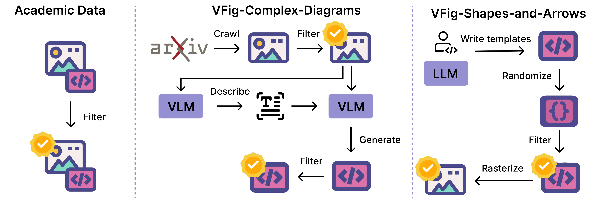
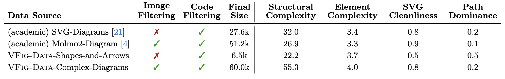
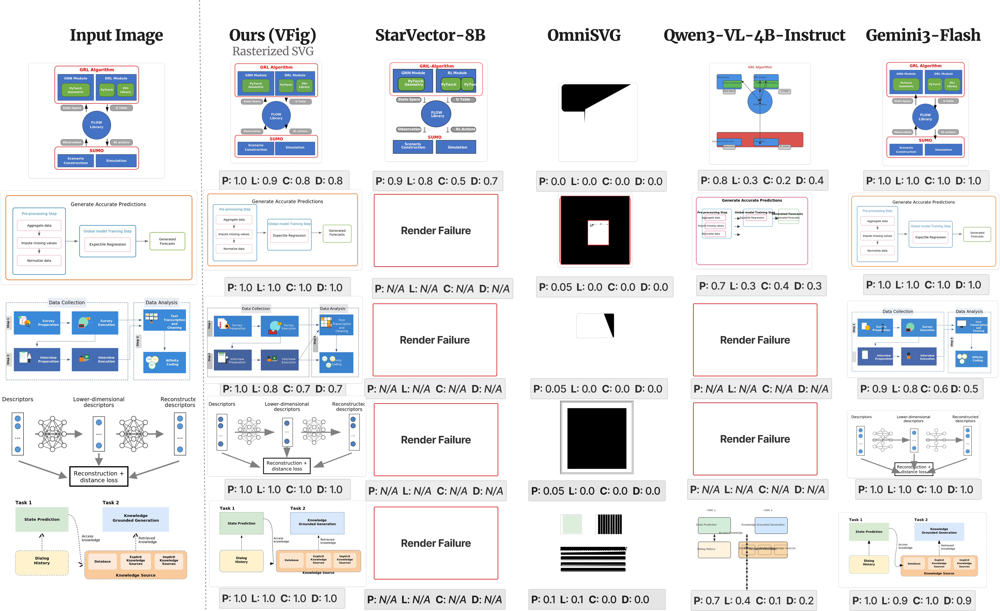

Overview of VFIG. Given complex raster images (top row) as input, VFIG generates editable, high-fidelity SVG code (pink box). Rendering the generated SVG (bottom row) produces outputs nearly indistinguishable from the inputs.
Overview of VFIG. Given complex raster images (top row) as input, VFIG generates editable, high-fidelity SVG code (pink box). Rendering the generated SVG (bottom row) produces outputs nearly indistinguishable from the inputs.
Scalable Vector Graphics (SVG) are an essential format for technical illustration and digital design, offering precise resolution independence and flexible semantic editability. In practice, however, original vector source files are frequently lost or inaccessible, leaving only “flat” rasterized versions (e.g., PNG or JPEG) that are difficult to modify or scale. Manually reconstructing these figures is a prohibitively labor-intensive process, requiring specialized expertise to recover the original geometric intent. To bridge this gap, we propose VFIG, a family of Vision–Language Models trained for complex and high-fidelity figure-to-SVG conversion. While this task is inherently data-driven, existing datasets are typically small-scale and lack the complexity of professional diagrams. We address this by introducing VFIG-Data, a large-scale dataset of 66K high-quality figure–SVG pairs, curated from a diverse mix of real-world paper figures and procedurally generated diagrams. Recognizing that SVGs are composed of recurring primitives and hierarchical local structures, we introduce a coarse-to-fine training curriculum that begins with supervised fine-tuning (SFT) to learn atomic primitives and transitions to reinforcement learning (RL) refinement to optimize global diagram fidelity, layout consistency, and topological edge cases. Finally, we introduce VFIG-Bench, a comprehensive evaluation suite with novel metrics designed to measure the structural integrity of complex figures. VFIG achieves state-of-the-art performance among open-source models and performs on par with GPT-5.2, achieving a VLM-Judge score of 0.829 on VFIG-Bench.
We curate VFIG-Data, a large-scale dataset of 66K rigorously filtered image–SVG pairs. Unlike prior SVG datasets that focus predominantly on icons or decorative graphics, VFIG-Data targets diagram-centric scientific figures. To our knowledge, it is the first dataset of this scale purpose-built for structured scientific figure generation.

Examples of VFIG-Data and academic data. We show the three sources: simple diagrams from academic datasets, complex diagram layouts, and a curated set of basic shapes and arrows to support structured SVG generation.
Our pipeline covers three complementary data sources: (1) a data generation pipeline that produces complex diagrams via a VLM-based describe-and-generate approach from crawled images; (2) a rigorous filtering procedure to ensure quality and fidelity; and (3) 78K additional data points from existing academic SVG datasets, processed through the same filtering pipeline to improve generalization. Together, these form a diverse and high-quality training mixture.

Data generation and filtering pipelines. We show the data generation and filtering processes for curated academic figures, complex diagrams created through a VLM-based describe-and-generate pipeline from crawled images, and shapes and arrows produced by LLM-generated templates with randomized elements.

Summary of the training mixture.
Learns SVG syntax and structure from paired figure–SVG supervision.
Simple → complex curriculum
Improves visual fidelity using rewards on rendered SVG outputs.
Presence • Layout • Connectivity • Details
With VFIG, we benchmark figure-to-SVG generation and highlight four key takeaways:
| Model | VFIG-Bench | Molmo2-Diagram | SVG-Diagrams | |||||||||||||||
|---|---|---|---|---|---|---|---|---|---|---|---|---|---|---|---|---|---|---|
| SSIM↑ | LPIPS↓ | VisualSim↑ | VLM-Judge↑ | Clean↑ | Render↑ | SSIM↑ | LPIPS↓ | VisualSim↑ | VLM-Judge↑ | Clean↑ | Render↑ | SSIM↑ | LPIPS↓ | VisualSim↑ | VLM-Judge↑ | Clean↑ | Render↑ | |
| Classical raster-to-vector | ||||||||||||||||||
| VTracer | 0.950 | 0.092 | 0.938 | 0.838 | 0.000 | 0.997 | 0.942 | 0.113 | 0.886 | 0.757 | 0.000 | 1.000 | 0.885 | 0.130 | 0.903 | 0.806 | 0.000 | 1.000 |
| Closed-source VLMs | ||||||||||||||||||
| GPT-5.2 | 0.727 | 0.364 | 0.957 | 0.858 | 0.731 | 0.995 | 0.763 | 0.283 | 0.955 | 0.894 | 0.792 | 1.000 | 0.606 | 0.349 | 0.936 | 0.781 | 0.688 | 0.984 |
| Gemini-2.5-flash | 0.772 | 0.258 | 0.964 | 0.913 | 0.788 | 0.990 | 0.828 | 0.162 | 0.965 | 0.936 | 0.833 | 0.992 | 0.672 | 0.245 | 0.950 | 0.893 | 0.680 | 0.991 |
| Gemini-2.5-pro | 0.756 | 0.303 | 0.964 | 0.932 | 0.787 | 0.902 | 0.784 | 0.244 | 0.959 | 0.929 | 0.814 | 0.930 | 0.637 | 0.311 | 0.943 | 0.887 | 0.669 | 0.945 |
| Open-source VLMs | ||||||||||||||||||
| OmniSVG-4B | 0.695 | 0.601 | 0.505 | 0.039 | 0.000 | 0.819 | 0.705 | 0.545 | 0.504 | 0.096 | 0.000 | 0.894 | 0.586 | 0.573 | 0.569 | 0.089 | 0.000 | 0.875 |
| StarVector-8B | 0.611 | 0.416 | 0.839 | 0.582 | 0.643 | 0.139 | 0.496 | 0.467 | 0.809 | 0.591 | 0.728 | 0.146 | 0.663 | 0.297 | 0.899 | 0.659 | 0.467 | 0.559 |
| Qwen2.5-VL-4B | 0.708 | 0.574 | 0.857 | 0.466 | 0.794 | 0.476 | 0.722 | 0.512 | 0.859 | 0.540 | 0.774 | 0.629 | 0.614 | 0.554 | 0.805 | 0.449 | 0.591 | 0.495 |
| Ours | ||||||||||||||||||
| Ours (SFT) | 0.763 | 0.264 | 0.951 | 0.781 | 0.784 | 0.884 | 0.783 | 0.226 | 0.937 | 0.776 | 0.828 | 0.966 | 0.633 | 0.311 | 0.907 | 0.653 | 0.710 | 0.939 |
| Ours (SFT+RL) | 0.778 | 0.212 | 0.957 | 0.829 | 0.853 | 0.960 | 0.800 | 0.177 | 0.949 | 0.834 | 0.855 | 0.976 | 0.654 | 0.267 | 0.919 | 0.705 | 0.788 | 0.973 |
VisualSim: avg. cosine similarity of DINO, CLIP, and SigLIP embeddings. | VLM-Judge: mean score of Gemini and GPT judges. | Clean: SVG cleanliness. | Render: successful rendering rate.

SVG generation examples on VFIG-Bench. Given the same input raster image, we compare the rendered SVG outputs produced by different methods. Our model more faithfully preserves the structure of the input diagram. P/L/C/D denote the Gemini judge scores for presence, layout, connectivity, and details.

Additional SVG generation examples on VFIG-Bench.

Failure cases of VFIG on VFIG-Bench.
@misc{he2026vfigvectorizingcomplexfigures,
title={VFIG: Vectorizing Complex Figures in SVG with Vision-Language Models},
author={Qijia He and Xunmei Liu and Hammaad Memon and Ziang Li and Zixian Ma and Jaemin Cho and Jason Ren and Daniel S Weld and Ranjay Krishna},
year={2026},
eprint={2603.24575},
archivePrefix={arXiv},
primaryClass={cs.CV},
url={https://arxiv.org/abs/2603.24575},
}